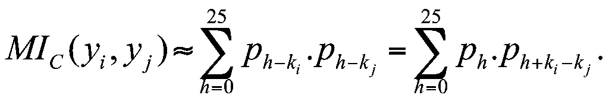
Ch¬ng III
C¸c hÖ mËt m· khãa ®èi xøng
3.1. Mét sè hÖ mËt m· cæ ®iÓn.
Trong ch¬ng nµy ta sÏ giíi thiÖu mét sè hÖ mËt m· cã khãa ®èi xøng, tøc lµ nh÷ng hÖ mËt m· mµ khãa lËp mËt m· vµ khãa gi¶i mËt m· lµ tròng nhau, vµ v× vËy khãa mËt m· chung ®ã ph¶i ®îc gi÷ bÝ mËt, chØ riªng hai ®èi t¸c (ngêi lËp mËt m· ®Ó göi ®i vµ ngên nhËn mËt m· göi ®Õn) ®îc biÕt mµ th«i. Trong suèt mét thêi kú lÞch sö dµi tõ thêi cæ ®¹i cho ®Õn vµi ba thËp niªn gÇn ®©y, c¸c ph¬ng ph¸p mËt m· ®îc sö dông trong thùc tÕ ®Òu lµ mËt m· kho¸ ®èi xøng, tõ hÖ mËt m· Ceasar ®· ®îc dïng h¬n ngh×n n¨m tríc cho ®Õn c¸c hÖ mËt m· ®îc sö dông víi sù trî gióp cña kü thuËt m¸y tÝnh hiÖn ®¹i trong thêi gian gÇn ®©y. Tríc hÕt ta h·y b¾t ®Çu víi mét sè hÖ mËt m· cæ ®iÓn.
3.1.1. M· chuyÓn dÞch (shift cipher)
C¸c hÖ mËt m· dïng phÐp chuyÓn dÞch nãi trong môc nµy còng nh nhiÒu hÖ mËt m· tiÕp sau ®Òu cã b¶ng ký tù b¶n râ vµ b¶ng ký tù b¶n m· lµ b¶ng ký tù cña ng«n ng÷ viÕt th«ng thêng. V× b¶ng ký tù tiÕng ViÖt cã dïng nhiÒu dÊu phô lµm cho c¸ch x¸c ®Þnh ký tù khã thèng nhÊt, nªn trong tµi liÖu nµy ta sÏ lÊy b¶ng ký tù tiÕng Anh ®Ó minh ho¹, b¶ng ký tù nµy gåm cã 26 ký tù, ®îc ®¸nh sè tõ 0 ®Õn 25 nh tr×nh bµy ë tiÕt 1.2.1, ta cã thÓ ®ång nhÊt nã víi tËp Z26. Nh vËy, s¬ ®å c¸c hÖ mËt m· chuyÓn dÞch ®îc ®Þnh nghÜa nh sau:
S = (P , C , K , E , D ) ,
trong ®ã P = C = K = Z26 , c¸c ¸nh x¹ E vµ D ®îc cho bëi:
víi mäi K, x , y Z26 : E (K, x) = x +K mod26, D (K, y) = y - K mod26.
C¸c hÖ mËt m· ®îc x¸c ®Þnh nh vËy lµ ®óng ®¾n, v× víi mäi K, x , y Z26 ta ®Òu cã:
dK(eK(x)) = (x +K ) - K mod26 = x.
C¸c hÖ mËt m· chuyÓn dÞch ®· ®îc sö dông tõ rÊt sím, theo truyÒn thuyÕt, hÖ m· ®ã víi K =3 ®· ®îc dïng bëi J. Caesar tõ thêi ®Õ quèc La m·, vµ ®îc gäi lµ hÖ m· Caesar.
ThÝ dô: Cho b¶n râ hengapnhauvaochieuthubay, chuyÓn d·y ký tù ®ã thµnh d·y sè t¬ng øng ta ®îc:
x = 7 4 13 6 0 15 13 7 0 20 21 0 14 2 7 8 4 20 19 7 20 1 0 24.
NÕu dïng thuËt to¸n lËp mËt m· víi kho¸ K = 13, ta ®îc b¶n m· lµ:
y = 20 17 0 19 13 2 0 20 13 7 8 13 1 15 20 21 17 7 6 20 7 14 13 11,
chuyÓn díi d¹ng ký tù th«ng thêng ta ®îc b¶n mËt m· lµ: uratncaunhinbpuv rhguhonl .
§Ó gi¶i b¶n mËt m· ®ã, ta chØ cÇn chuyÓn nã l¹i díi d¹ng sè (®Ó ®îc d·y y), råi thùc hiÖn thuËt to¸n gi¶i m·, tøc trõ tõng sè h¹ng víi 13 (theo m«®uyn 26), ®îc l¹i d·y x, chuyÓn thµnh d·y ký tù lµ ®îc b¶n râ ban ®Çu.
C¸c hÖ mËt m· chuyÓn dÞch tuy dÔ sö dông, nhng viÖc th¸m m· còng kh¸ dÔ dµng, sè c¸c kho¸ cã thÓ cã lµ 26; nhËn ®îc mét b¶n m·, ngêi th¸m m· chØ cÇn thö dïng lÇn lît tèi ®a lµ 26 kho¸ ®ã ®Ó gi¶i m·, ¾t sÏ ph¸t hiÖn ra ®îc kho¸ ®· dïng vµ c¶ b¶n râ!
3.1.2. M· thay thÕ (substitution cipher).
S¬ ®å c¸c hÖ mËt m· thay thÕ ®îc ®Þnh nghÜa nh sau:
S = (P , C , K , E , D ) ,
trong ®ã P = C = Z26 , K lµ tËp hîp tÊt c¶ c¸c phÐp ho¸n vÞ trªn Z26
c¸c ¸nh x¹ E vµ D ®îc cho bëi:
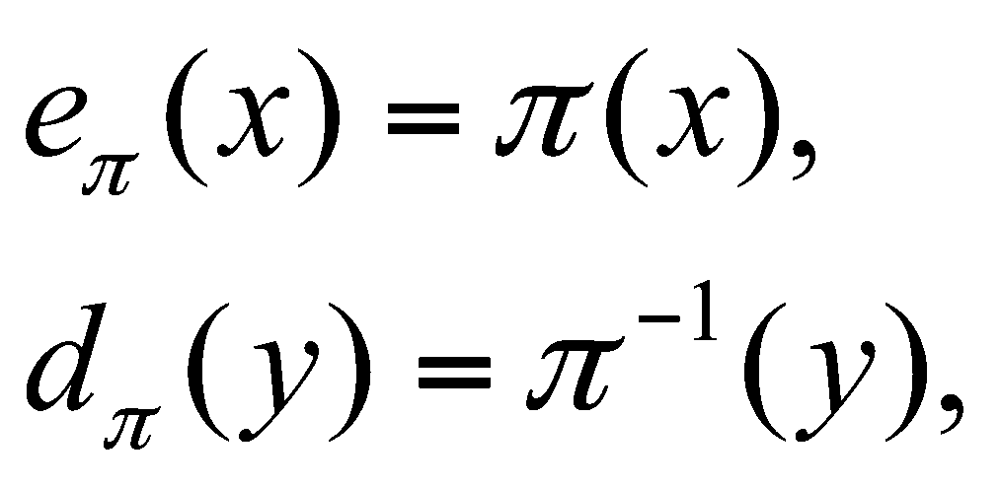
Ta thêng ®ång nhÊt Z26 víi b¶ng ký tù tiÕng Anh, do ®ã phÐp ho¸n vÞ trªn Z26 còng ®îc hiÓu lµ mét phÐp ho¸n vÞ trªn tËp hîp c¸c ký tù tiÕng Anh, thÝ dô mét phÐp ho¸n vÞ ®îc cho bëi b¶ng :
a |
b |
c |
d |
e |
f |
g |
h |
i |
j |
k |
l |
m |
n |
o |
p |
q |
r |
x |
n |
y |
a |
h |
p |
o |
g |
z |
q |
w |
b |
t |
s |
f |
l |
r |
c |
s |
t |
u |
v |
w |
x |
y |
z |
v |
m |
u |
e |
k |
j |
d |
i |
Víi hÖ mËt m· thay thÕ cã kho¸ , b¶n râ
x = hengapnhauvaochieuthubay
sÏ ®îc chuyÓn thµnh b¶n mËt m·
y = ghsoxlsgxuexfygzhumgunxd .
ThuËt to¸n gi¶i m· víi kho¸ , ngîc l¹i sÏ biÕn y thµnh b¶n râ x.
S¬ ®å hÖ mËt m· cã sè kho¸ cã thÓ b»ng sè c¸c phÐp ho¸n vÞ trªn tËp Z26 , tøc lµ 26! kho¸, ®ã lµ mét sè rÊt lín (26!> 4.1026). Do ®ã, viÖc duyÖt lÇn lît tÊt c¶ c¸c kho¸ cã thÓ ®Ó th¸m m· lµ kh«ng thùc tÕ, ngay c¶ dïng m¸y tÝnh. Tuy vËy, cã nh÷ng ph¬ng ph¸p th¸m m· kh¸c hiÖu qu¶ h¬n, lµm cho c¸c hÖ mËt m· thay thÕ kh«ng thÓ ®îc xem lµ an toµn.
3.1.3. M· apphin.
S¬ ®å c¸c hÖ mËt m· apphin ®îc ®Þnh nghÜa nh sau:
S = (P , C , K , E , D ) ,
trong ®ã P = C = Z26 , K = { (a,b) Z26 x Z26 gcd(a, 26) = 1} ,
c¸c ¸nh x¹ E vµ D ®îc cho bëi:
eK(x ) = ax + b mod26,
dK(y ) = a-1(y - b) mod26,
víi mäi x P , y C , K = (a, b) K .
Cã ®iÒu kiÖn gcd (a, 26) = 1 lµ ®Ó b¶o ®¶m cã phÇn tö nghÞch ®¶o a-1mod26 cña a , lµm cho thuËt to¸n gi¶i m· dK lu«n thùc hiÖn ®îc. Cã tÊt c¶ (26) = 12 sè a Z26 nguyªn tè víi 26, ®ã lµ c¸c sè
1, 3, 5, 7 ,9, 11, 15, 17, 19, 21, 23, 25,
vµ c¸c sè nghÞch ®¶o theo mod26 t¬ng øng cña chóng lµ
1, 9, 21, 15, 3, 19, 7, 23, 11, 5, 17, 25.
ThÝ dô víi b¶n râ hengapnhauvaochieuthubay, cã d·y sè t¬ng øng lµ:
x = 7 4 13 6 0 15 13 7 0 20 21 0 14 2 7 8 4 20 19 7 20 1 0 24.
NÕu dïng hÖ mËt m· apphin víi kho¸ K=(5, 6) ta sÏ ®îc b¶n mËt m·
y = 15 0 19 10 6 3 19 15 6 2 7 6 24 16 15 20 0 2 23 15 2 11 6 22,
chuyÓn sang dßng ký tù tiÕng Anh ta ®îc b¶n mËt m· díi d¹ng
patkgdtpgchgyqpuacxpclgw .
V× cã 12 sè thuéc Z26 nguyªn tè víi 26, nªn sè c¸c kho¸ cã thÓ cã (do ®ã , sè c¸c hÖ mËt m· apphin) lµ b»ng 12x26 =312, mét con sè kh«ng lín l¾m nÕu ta sö dông m¸y tÝnh ®Ó thùc hiÖn viÖc th¸m m· b»ng c¸ch duyÖt lÇn lît tÊt c¶ c¸c kho¸ cã thÓ; nh vËy, m· apphin còng kh«ng cßn ®îc xem lµ m· an toµn !
3.1.4. M· VigenÌre.
S¬ ®å mËt m· nµy lÊy tªn cña Blaise de VigenÌre, sèng vµo thÕ kû 16. Kh¸c víi c¸c hÖ mËt m· ®· kÓ tríc, c¸c hÖ mËt m· VigenÌre kh«ng thùc hiÖn trªn tõng ký tù mét, mµ ®îc thùc hiÖn trªn tõng bé m ký tù (m lµ sè nguyªn d¬ng).
S¬ ®å c¸c hÖ mËt m· VigenÌre ®îc ®Þnh nghÜa nh sau:
S = (P , C , K , E , D ) ,
trong
®ã P
= C
=
K
=
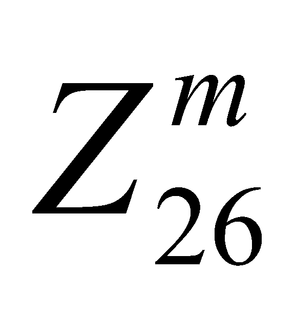
dK(y1,..., ym ) = ( y1-k1 ,..., ym-km ) mod26
víi mäi x =(x1,..., xm ) P , y =(y1,..., ym ) C , K = (k1,...,km) K .
S¬ ®å m· VigenÌre cã thÓ ®îc xem lµ më réng cña s¬ ®å m· chuyÓn dÞch, nÕu m· chuyÓn dÞch thùc hiÖn viÖc chuyÓn dÞch tõng ký tù mét th× m· VigenÌre thùc hiÖn ®ång thêi tõng bé m ký tù liªn tiÕp. ThÝ dô lÊy m = 6 vµ K = (2, 8, 15, 7, 4, 17). §Ó lËp mËt m· cho b¶n râ
hengapnhauvaochieuthubay,
ta còng chuyÓn nã thµnh d·y sè vµ t¸ch thµnh tõng ®o¹n 6sè liªn tiÕp:
x = 7 4 13 6 0 15 13 7 0 20 21 0 14 2 7 8 4 20 19 7 20 1 0 24.
(nÕu ®é dµi cña x kh«ng ph¶i lµ béi sè cña 6, ta cã thÓ qui íc thªm vµo ®o¹n cuèi cña x mét sè phÇn tö nµo ®ã, ch¼ng h¹n lµ c¸c sè 0, ®Ó bao giê còng cã thÓ xem lµ x t¸ch ®îc thµnh c¸c ®o¹n cã 6 sè liªn tiÕp). Céng theo mod26 c¸c sè trong tõng ®o¹n ®ã víi c¸c sè t¬ng øng trong kho¸ K ta sÏ ®îc b¶n mËt m·
y = 9 12 2 13 4 6 15 15 15 1 25 17 16 10 22 15 8 11 21 15 9 8 4 15
chuyÓn sang d·y ký tù ta ®îc b¶n m· lµ
jmcnegpppbzrqkwpilvpjiep .
Tõ b¶n m· ®ã, dïng thuËt to¸n gi¶i m· t¬ng øng ta l¹i thu ®îc b¶n râ ban ®Çu.
TËp K cã tÊt c¶ lµ 26m phÇn tö, do ®ã víi mçi m cã tÊt c¶ lµ 26m hÖ mËt m· VigenÌre kh¸c nhau (víi m = 6 th× sè ®ã lµ 308,915,776), duyÖt toµn bé chõng Êy kho¸ ®Ó th¸m m· b»ng tÝnh thñ c«ng th× khã, nhng nÕu dïng m¸y tÝnh ®ñ m¹nh th× còng kh«ng ®Õn nçi khã l¾m!
3.1.5. M· Hill.
S¬ ®å mËt m· nµy ®îc ®Ò xuÊt bëi Lester S. Hill n¨m 1929. Còng gièng nh s¬ ®å m· VigenÌre, c¸c hÖ m· nµy ®îc thùc hiÖn trªn tõng bé m ký tù liªn tiÕp, ®iÒu kh¸c lµ mçi ký tù cña b¶n m· ®îc x¸c ®Þnh bëi mét tæ hîp tuyÕn tÝnh (trªn vµnh Z26) cña m ký tù trong b¶n râ. Nh vËy, kho¸ sÏ ®îc cho bëi mét ma trËn cÊp m, tøc lµ mét phÇn tö cña K Z m xm. §Ó phÐp biÕn ®æi tuyÕn tÝnh x¸c ®Þnh bëi ma trËn K cã phÐp nghÞch ®¶o, b¶n th©n ma trËn K còng ph¶i cã ma trËn nghÞch ®¶o K -1 theo mod26; mµ ®iÒu kiÖn cÇn vµ ®ñ ®Ó K cã nghÞch ®¶o lµ ®Þnh thøc cña nã, ký hiÖu detK, nguyªn tè víi 26. VËy, s¬ ®å mËt m· Hill ®îc ®Þnh nghÜa lµ s¬ ®å
S = (P , C , K , E , D ) ,
trong
®ã P
= C
=
,
K =
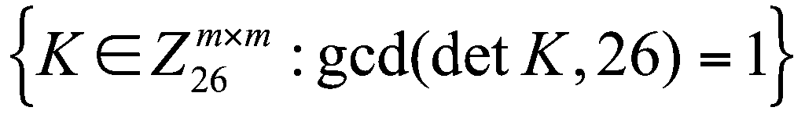
c¸c ¸nh x¹ E vµ D ®îc cho bëi:
eK(x1,..., xm ) = (x1,..., xm ).K mod26,
dK(y1,..., ym ) = (y1,..., ym ). K -1 mod26
víi mäi x =(x1,..., xm ) P , y =(y1,..., ym ) C , K K .
ThÝ
dô : Chän m
= 2, vµ K
= 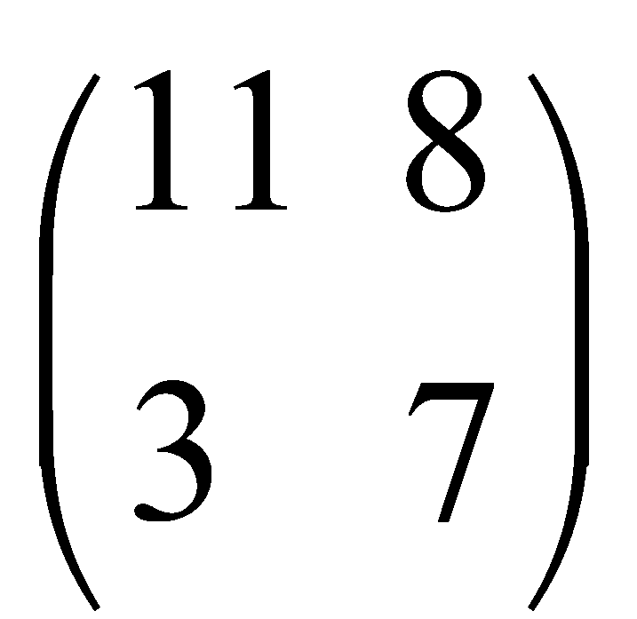
Víi bé hai ký tù x = (x1 ,x2) ta cã m· y = (y1 , y2).K ®îc tÝnh bëi: y1 = 11x1 + 3x2 mod26 y2 = 8x1 + 7x2 mod26 .
Ta lÊy l¹i b¶n râ hengapnhauvaochieuthubay, ta còng chuyÓn nã thµnh d·y sè vµ t¸ch thµnh tõng ®o¹n 2 sè liªn tiÕp:
x = 7 4 13 6 0 15 13 7 0 20 21 0 14 2 7 8 4 20 19 7 20 1 0 24. LËp mËt m· cho tõng ®o¹n hai sè liªn tiÕp, råi nèi ghÐp l¹i ta ®îc
y = 11 65 16 19 18 218 223 124 2223 80 1622 1915 1120 12.
Vµ tõ ®ã ta ®îc b¶n mËt m· díi d¹ng d·y ký tù lµ lgfqtbivicxmewxiaqwtplum .
Chó ý r»ng
K
-1 =
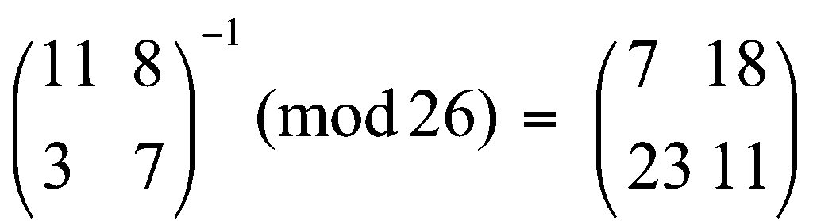
vµ gi¶i m· b»ng c¸ch nh©n tõng ®o¹n hai sè liªn tiÕp cña y víi K -1 ta sÏ ®îc l¹i d·y x, vµ tõ ®ã ®îc l¹i b¶n râ.
Víi mçi sè m cho tríc, sè c¸c kho¸ cã thÓ cã lµ b»ng sè c¸c ma trËn K cã detK nguyªn tè víi 26. Ta kh«ng cã c«ng thøc ®Ó tÝnh con sè ®ã, tuy biÕt r»ng khi m lín th× sè ®ã còng lµ rÊt lín, vµ tÊt nhiªn viÖc th¸m m· b»ng c¸ch duyÖt lÇn lît toµn bé c¸c hÖ m· Hill cã cïng sè m lµ kh«ng kh¶ thi. MÆc dï vËy, tõ l©u ngêi ta còng ®· t×m ®îc nh÷ng ph¬ng ph¸p th¸m m· kh¸c ®èi víi hÖ m· Hill mét c¸ch kh¸ hiÖu qu¶ mµ ta sÏ giíi thiÖu trong mét phÇn sau.
3.1.6. M· ho¸n vÞ.
C¸c hÖ m· ho¸n vÞ còng ®îc thùc hiÖn trªn tõng bé m ký tù liªn tiÕp, nhng b¶n mËt m· chØ lµ mét ho¸n vÞ cña c¸c ký tù trong tõng bé m ký tù cña b¶n râ. Ta ký hiÖu Sm lµ tËp hîp tÊt c¶ c¸c phÐp ho¸n vÞ cña tËp hîp { 1,2, ... ,m }. S¬ ®å c¸c phÐp m· ho¸n vÞ ®îc cho bëi
S = (P , C , K , E , D ) ,
trong ®ã P = C = , K = Sm , c¸c ¸nh x¹ E vµ D ®îc cho bëi:
eK(x1,...,
xm
) =
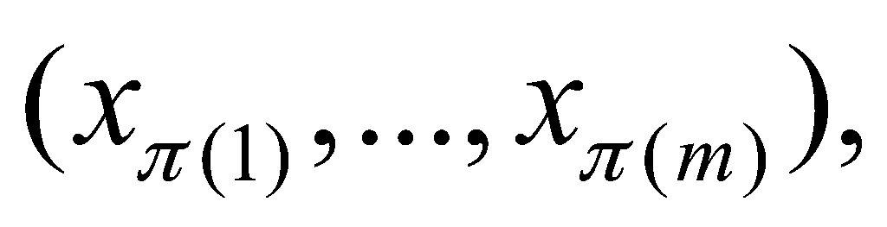
dK(y1,...,
ym
) =
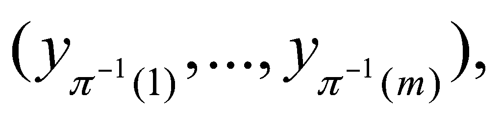
Víi b¶n râ hengapnhauvaochieuthubay, tøc còng lµ víi
x = 7 4 13 6 0 15 13 7 0 20 21 0 14 2 7 8 4 20 19 7 20 1 0 24. ta sÏ cã b¶n m· t¬ng øng lµ: y = 13 0 7 15 6 4 0 21 13 0 20 7 7 4 14 20 8 2 20 0 19 24 1 7
chuyÓn thµnh d·y ký tù lµ nahpgeavnauhheouicuatybh . Dïng cho tõng bé 6 ký tù liªn tiÕp cña b¶n mËt m· nµy (tøc lµ cña y) phÐp gi¶i m· dK ta sÏ thu l¹i ®îc x vµ b¶n râ ban ®Çu.
Chó ý r»ng m· ho¸n vÞ lµ mét trêng hîp riªng cña m· Hill. Thùc vËy, cho phÐp ho¸n vÞ trªn {1,2,...,m } , ta x¸c ®Þnh ma trËn K = (ki j ) víi ki j = 1 nÕu i = (j ), vµ = 0 nÕu ngîc l¹i, th× dÔ thÊy r»ng m· Hill víi kho¸ K cho cïng mét phÐp mËt m· nh m· lo¸n vÞ víi kho¸ . Víi mçi m cho tríc, sè c¸c hÖ mËt m· ho¸n vÞ cã thÓ cã lµ m !
3.2. Th¸m m· ®èi víi c¸c hÖ mËt m· cæ ®iÓn.
3.2.1. Mét vµi nhËn xÐt chung.
Nh ®· tr×nh bµy trong tiÕt 1.5 ch¬ng 1, môc ®Ých cña viÖc th¸m m· lµ dùa vµo th«ng tin vÒ b¶n mËt m· cã thÓ thu thËp ®îc trªn ®êng truyÒn tin mµ ph¸t hiÖn l¹i ®îc b¶n râ cña th«ng b¸o. V× s¬ ®å cña hÖ mËt m· ®îc sö dông thêng khã mµ gi÷ ®îc bÝ mËt, nªn ta thêng gi¶ thiÕt th«ng tin xuÊt ph¸t cña bµi to¸n th¸m m· lµ s¬ ®å hÖ mËt m· ®îc sö dông vµ b¶n mËt m· cña th«ng b¸o, nhiÖm vô cña th¸m m· lµ t×m b¶n râ cña th«ng b¸o ®ã. Ngoµi c¸c th«ng tin xuÊt ph¸t ®ã, tuú trêng hîp cô thÓ, cßn cã thÓ cã thªm c¸c th«ng tin bæ sung kh¸c, v× vËy bµi to¸n th¸m m· ®îc ph©n thµnh c¸c lo¹i bµi to¸n kh¸c nhau nh: th¸m m· chØ dùa vµo b¶n m·, th¸m m· khi biÕt c¶ b¶n râ, th¸m m· khi cã b¶n râ ®îc chän, th¸m m· khi cã b¶n m· ®îc chän (xem môc 1.5, ch¬ng 1).
Trong tiÕt nµy ta sÏ tr×nh bµy mét vµi ph¬ng ph¸p th¸m m· ®èi víi c¸c hÖ mËt m· cæ ®iÓn m« t¶ trong tiÕt tríc. Vµ ta còng gi¶ thiÕt c¸c b¶n râ còng nh b¶n m· ®Òu ®îc x©y dùng trªn b¶ng ký tù tiÕng Anh, vµ h¬n n÷a c¸c th«ng b¸o lµ c¸c v¨n b¶n tiÕng Anh. Nh vËy, ta lu«n cã P = C = Z26 hay , vµ cã thªm th«ng tin lµ c¸c b¶n râ tu©n theo c¸c qui t¾c tõ ph¸p vµ có ph¸p cña ng«n ng÷ tiÕng Anh. §©y lµ mét c¨n cø quan träng cña c¸c ph¬ng ph¸p th¸m m· ®èi víi c¸c hÖ mËt m· cæ ®iÓn. TiÕc lµ viÖc dïng mËt m· ®Ó truyÒn ®a th«ng tin tiÕng ViÖt kh«ng ®Ó l¹i cho ta nhiÒu t liÖu ®Ó nghiªn cøu, vµ nh÷ng nghiªn cøu vÒ tõ ph¸p vµ có ph¸p còng cha cho ta nh÷ng qui t¾c thèng kª x¸c suÊt ®ñ tin cËy, nªn trong tµi liÖu nµy ta cha tr×nh bµy ®îc trªn c¸c thÝ dô mËt m· b»ng ng«n ng÷ ViÖt, ta ®µnh t¹m mîn c¸c thÝ dô b»ng v¨n b¶n tiÕng Anh ®Ó minh ho¹, mong ®îc b¹n ®äc bæ sung sau. C¸c kÕt qu¶ chñ yÕu ®îc sö dông nhiÒu nhÊt trong th¸m m· lµ c¸c qui t¾c thèng kª tÇn suÊt xuÊt hiÖn c¸c ký tù hay c¸c bé ®«i, bé ba,...ký tù liªn tiÕp trong c¸c v¨n b¶n tiÕng Anh. Trªn c¬ së ph©n tÝch c¸c sè liÖu thèng kª tõ mét lîng rÊt lín c¸c v¨n b¶n th tõ, s¸ch vë, b¸o chÝ, v.v... ngêi ta ®· thu ®îc nh÷ng kÕt qu¶ mµ c¸c t¸c gi¶ Beker vµ Piper ®· tæng hîp l¹i nh sau:
Ph©n bè x¸c suÊt xuÊt hiÖn cña c¸c ký tù ®îc s¾p xÕp theo thø tù: 1. Ký tù e cã x¸c suÊt xuÊt hiÖn cao nhÊt lµ 0. 127, 2. C¸c ký tù t, a, o, i, n, s, h, r cã x¸c suÊt tõ 0. 060 ®Õn 0. 090, 3. C¸c ký tù d , l cã x¸c suÊt kho¶ng 0. 04, 4. C¸c ký tù c, u, m,w, f, g, y, p, b cã x¸c suÊt tõ 0. 015 ®Õn 0.028, 5. C¸c ký tù v, k, j, x, q, z cã x¸c suÊt díi 0. 01. Ba m¬i bé ®«i ký tù cã x¸c suÊt xuÊt hiÖn cao nhÊt lµ (kÓ tõ cao xuèng): th, he, in, er, an, re, ed, on, es, st, en, at, to, nt, ha, nd, ou, ea, ng, as, or, ti, is, et, it, ar, te, se, hi, of. Mêi hai bé ba ký tù cã x¸c suÊt xuÊt hiÖn cao nhÊt lµ: the, ing, and, her, ere, ent, tha, nth, was, eth, for, dth.
Sau ®©y lµ b¶ng ph©n bè x¸c suÊt cña tÊt c¶ c¸c ký tù:
A (0) 0.082 B (1) 0.015 C (2) 0.028 D (3) 0.043 E (4) 0.127 F (5) 0. 022 G (6) 0.020 H (7) 0. 061 I (8) 0.070 J (9) 0.002 K (10) 0.008 L (11) 0.040
M (12) 0.024 N (13) 0.067 O (14) 0.075 P (15) 0.019 Q (16) 0.001 R (17) 0.060 S (18) 0.063 T (19) 0.091 U (20) 0.028 V (21) 0.010 W (22) 0.023 X (23) 0.001 Y (24) 0.020 Z (25) 0.001.
3.2.2. Th¸m m· ®èi víi m· apphin.
Kho¸ m· apphin cã d¹ng K = (a,b) víi a, b Z26 vµ gcd(a,26)=1. Ký tù m· y vµ ký tù b¶n râ x t¬ng øng cã quan hÖ
y = a.x + b mod 26.
Nh vËy, nÕu ta biÕt hai cÆp (x, y) kh¸c nhau lµ ta cã ®îc hai ph¬ng tr×nh tuyÕn tÝnh ®Ó tõ ®ã t×m ra gi¸ trÞ hai Èn sè a,b, tøc lµ t×m ra K.
ThÝ dô: Ta cã b¶n mËt m·: fmxvedkaphferbndkrxrsrefmorudsdkdvshvufedkaprkdlyevlrhhrh . H·y t×m kho¸ mËt m· vµ b¶n râ t¬ng øng.
Ta thÊy trong b¶n mËt m· nãi trªn, r xuÊt hiÖn 8 lÇn, d 7 lÇn, e, k, h mçi ký tù 5 lÇn, f, s, v mçi ký tù 4 lÇn, v.v...; vËy cã thÓ ph¸n ®o¸n r lµ m· cña e , d lµ m· cña t, khi ®ã cã
4a + b = 17 mod26, 19a + b = 3 mod26,
gi¶i ra ®îc a = 6 , b = 19. V× gcd(a, 26) = 2 1, nªn (a, b) kh«ng thÓ lµ kho¸ ®îc, ph¸n ®o¸n trªn kh«ng ®óng. Ta l¹i thö chon mét ph¸n ®o¸n kh¸c: r lµ m· cña e, h lµ m· cña t . Khi ®ã cã: 4a + b = 17 mod26, 19a + b = 7 mod26,
ta gi¶i ra ®îc a = 3, b = 5. V× (a, 26) = 1 nªn K = (3,5) cã thÓ lµ khãa cÇn t×m. Khi ®ã phÐp lËp mËt m· lµ eK(x ) = 3x +5 mod26, vµ phÐp gi¶i m· t¬ng øng lµ dK (y) = 9) = 9y - 19 mod26. Dïng phÐp gi¶i m· ®ã cho b¶n m· ta sÏ ®îc (díi d¹ng ký tù) b¶n râ lµ:
algorithmsarequitegeneraldefinitionsofarithmeticprocesses .
Ta cã thÓ kÕt luËn kho¸ ®óng lµ K = (3, 5) vµ dßng trªn lµ b¶n râ cÇn t×m.
3.2.3. Th¸m m· ®èi víi m· VigenÌre.
M· VigenÌre cã thÓ coi lµ m· chuyÓn dÞch ®èi víi tõng bé m ký tù. Kho¸ m· lµ mét bé K = (k1,..., km) gåm m sè nguyªn mod 26. ViÖc th¸m m· gåm hai bíc: bíc thø nhÊt x¸c ®Þnh ®é dµi m, bíc thø hai x¸c ®Þnh c¸c sè k1,..., km.
Cã hai ph¬ng ph¸p ®Ó x¸c ®Þnh ®é dµi m : phÐp thö Kasiski vµ ph¬ng ph¸p dïng chØ sè trïng hîp.
PhÐp thö Kasiski (®Ò xuÊt tõ 1863). PhÐp thö dùa vµo nhËn xÐt r»ng hai ®o¹n trïng nhau cña b¶n râ sÏ ®îc m· ho¸ thµnh hai ®o¹n trïng nhau cña b¶n m·, nÕu kho¶ng c¸ch cña chóng trong v¨n b¶n râ (kÓ tõ ký tù ®Çu cña ®o¹n nµy ®Õn ký tù ®Çu cña ®o¹n kia) lµ béi sè cña m. MÆt kh¸c, nÕu trong b¶n m·, cã hai ®o¹n trïng nhau vµ cã ®é dµi kh¸ lín ( 3 ch¼ng h¹n) th× rÊt cã kh¶ n¨ng chóng lµ m· cña hai ®o¹n trïng nhau trong b¶n râ. V× vËy, ta thö t×m mét ®o¹n m· (cã ba ký tù trë lªn) xuÊt hiÖn nhiÒu lÇn trong b¶n m·, tÝnh kho¶ng c¸ch cña c¸c lÇn xuÊt hiÖn ®ã, ch¼ng h¹n ®îc d1,d2...,dt ; khi ®ã ta cã thÓ ph¸n ®o¸n m = d = gcd(d1, d2,..., dt )- íc sè chung lín nhÊt cña d1, d2..., dt ; hoÆc m lµ íc sè cña d.
Ph¬ng ph¸p dïng chØ sè trïng hîp: (®Þnh nghÜa chØ sè trïng hîp do W.Friedman ®a ra n¨m 1920).
§Þnh nghÜa 3.1. Cho x = x1, x2... xn lµ mét d·y gåm n ký tù. X¸c suÊt cña viÖc hai phÇn tö cña x trïng nhau ®îc gäi lµ chØ sè trïng hîp cña x , ký hiÖu lµ IC(x).
Ký hiÖu f0, f1,..., f25 lÇn lît lµ tÇn suÊt xuÊt hiÖn cña a, b, ... ,z trong x, ta cã:
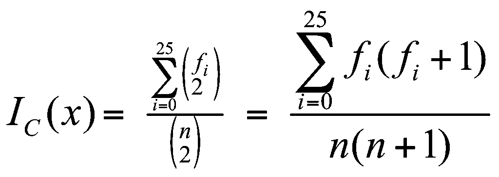
.Gi¶ sö x lµ mét d·y ký tù (tiÕng Anh). Ta cã thÓ hy väng r»ng:
IC(x)
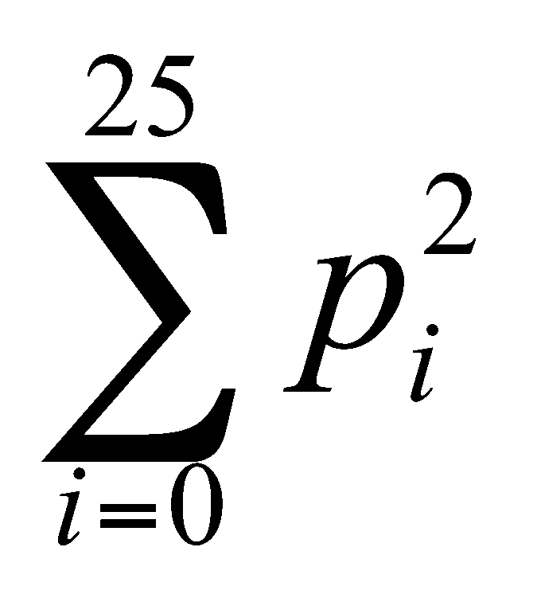
trong ®ã pi lµ x¸c suÊt cña ký tù øng víi sè hiÖu i cho bëi b¶ng ph©n bè x¸c suÊt c¸c ký tù (trang 61)
NÕu x lµ mét d·y ký tù hoµn toµn ngÉu nhiªn th× ta cã:
IC 26. (1/26)2 = 1/26 = 0,038 .
Dùa vµo c¸c ®iÒu nãi trªn, ta cã ph¬ng ph¸p ®o¸n ®é dµi m cña m· VigenÌre nh sau: Cho b¶n m· y = y1y2..., yn. Ta viÕt l¹i y theo b¶ng cã m (m 1) hµng nh sau:
y = y1 ym+1..... ytm+1
y2 ym+2..... ytm+2 .
..........................
ym yem..... y(tm+1)m
nghÜa lµ viÕt lÇn lît theo c¸c cét m ký tù cho ®Õn hÕt. Ta ký hiÖu y1, y2,..., ym lµ c¸c x©u ký tù theo m hµng trong b¶ng ®ã. Chó ý r»ng c¸c ký tù ë mçi hµng yi ®Òu thu ®îc tõ c¸c ký tù ë v¨n b¶n gèc b»ng cïng mét phÐp dÞch chuyÓn nÕu m ®óng lµ ®é dµi cña kho¸, do ®ã nÕu m lµ ®é dµi cña kho¸ th× ta cã thÓ hy väng r»ng víi mäi i, 1 i m:
IC(yi) 0,065 .
§Ó ®o¸n ®é dµi m, ta lÇn lît chia y theo c¸ch trªn thµnh m = 1, 2, 3... hµng, vµ tÝnh c¸c IC(yi) (1 i m), cho ®Õn khi nµo ®îc mét sè m mµ víi mäi i, 1 i m, ®Òu cã IC(yi) 0,065 th× ta cã thÓ ch¾c m lµ ®é dµi cña kho¸.
Dïng phÐp thö Kasiski, ta nhËn thÊy r»ng chr xuÊt hiÖn 5 lÇn, kho¶ng c¸ch cña c¸c lÇn xuÊt hiÖn liªn tiÕp lµ 165, 70, 50, 10. ¦íc sè chung cña c¸c sè ®ã lµ 5. VËy ta cã thÓ ph¸n ®o¸n ®é dµi kho¸ m· lµ 5.
Dïng ph¬ng ph¸p chØ sè trïng hîp, víi m = 1 ta cã mét chØ sè trïng hîp lµ 0,045; víi m = 2 cã hai chØ sè lµ 0,046 vµ 0,041; víi m = 3 cã ba chØ sè lµ 0,043; 0,050 vµ 0,047 ; víi m = 4 cã bèn chØ sè lµ 0,042; 0,039; 0,046 vµ 0,043; víi m = 5, ta thu ®îc n¨m chØ sè lµ 0,063; 0,068; 0,069; 0,061 vµ 0,072, ®Òu kh¸ gÇn víi 0,065. VËy cã thÓ ph¸n ®o¸n ®é dµi kho¸ lµ 5. C¶ hai ph¬ng ph¸p cho kÕt qu¶ nh nhau.
B©y giê ®Õn bíc thø hai lµ x¸c ®Þnh c¸c gi¸ trÞ k1, k2,...km. Ta cÇn mét kh¸i niÖm míi lµ chØ sè trïng hîp t¬ng hç, ®îc ®Þnh nghÜa nh sau:
§Þnh nghÜa 3.2. Gi¶ sö x = x1x2... xn vµ y = y1y2... yn lµ hai d·y ký tù cã ®é dµi n vµ n'. ChØ sè trïng hîp t¬ng hç cña x vµ y, ký hiÖu MIC(x,y), ®îc ®Þnh nghÜa lµ x¸c suÊt cña viÖc mét phÇn tö cña x trïng víi mét phÇn tö cña y.
Ký
hiÖu
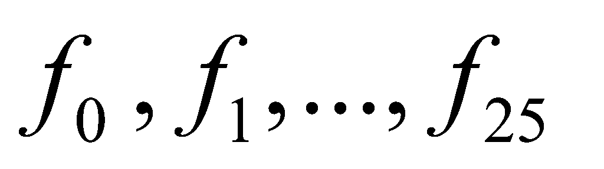 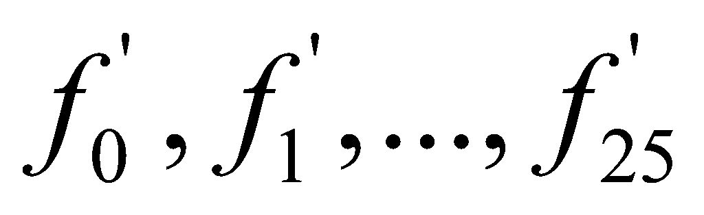
MIC(x,y)
=
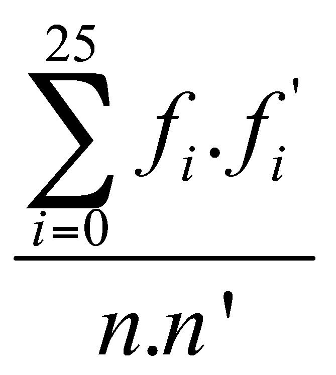
B©y giê víi m ®· x¸c ®Þnh, ta viÕt b¶n m· y lÇn lît theo tõng cét ®Ó ®îc m hµng y1,...ym nh ë phÇn trªn. Ta t×m kho¸ m· K = (k1,k2,...km).
Gi¶
sö x
lµ
b¶n râ vµ x1,...,xm
lµ c¸c phÇn b¶n râ t¬ng øng víi y1,...,ym.
Ta cã thÓ xem ph©n bè x¸c suÊt cña c¸c ký tù trªn x,
vµ còng trªn c¸c x1,...,
xm
lµ xÊp xØ víi ph©n bè x¸c suÊt cña c¸c ký tù trªn v¨n
b¶n tiÕng Anh nãi chung. Do ®ã, x¸c suÊt cña viÖc mét ký
tù ngÉu nhiªn cña yi
b»ng a lµ
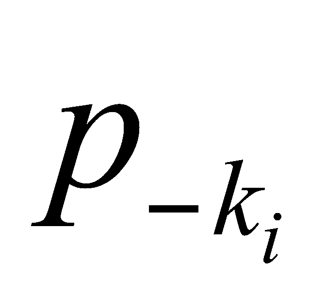 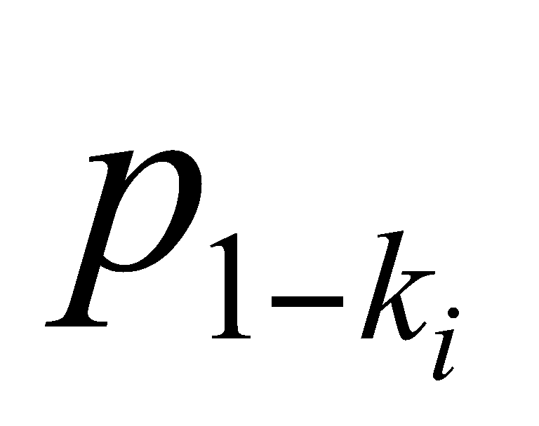

§¹i lîng ®ã chØ phô thuéc vµo ki - kj, ta gäi lµ dÞch chuyÓn t¬ng ®èi cña yi vµ yj. Ta chó ý r»ng biÓu thøc:
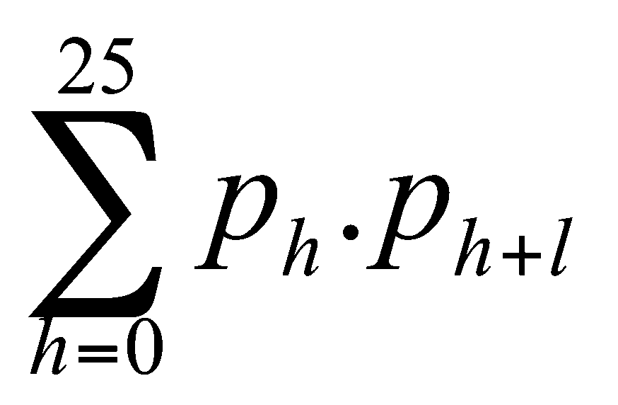
cã gi¸ trÞ lín nhÊt khi l = 0 lµ 0,065, vµ cã gi¸ trÞ biÕn thiªn gi÷a 0,031 vµ 0,045 víi mäi l > 0 .
NhËn xÐt r»ng yj ph¶i dÞch chuyÓn l = ki - kj bíc (hay dÞch chuyÓn l ký tù trong b¶ng ch÷ c¸i) ®Ó ®îc yi , nªn nÕu ký hiÖu yjg lµ dÞch chuyÓn g bíc cña yj , th× ta cã hy väng khi tÝnh lÇn lît c¸c ®¹i lîng MIC(yi,yjg ) víi 0 g 25, ta sÏ ®¹t ®îc mét gi¸ trÞ xÊp xØ 0,065 víi g = l, vµ c¸c gi¸ trÞ kh¸c ®Òu ë kho¶ng gi÷a 0,031 vµ 0,045. §iÒu ®ã cho ta mét ph¬ng ph¸p ®Ó íc lîng c¸c dÞch chuyÓn ki - kj , tøc lµ ®îc mét sè ph¬ng tr×nh d¹ng ki - kj = l, tõ ®ã gióp ta tÝnh ra c¸c gi¸ trÞ k1, k2,..., km.
Trong thÝ dô cña b¶n m· ®ang xÐt, ta tÝnh ®îc c¸c gi¸ trÞ MIC(yi , yjg) víi 1 i j 5, 0 g 25, nh trong b¶ng ë trang sau ®©y (trong b¶ng ®ã, ë bªn ph¶i mçi cÆp (i, j ) lµ mét ng¨n gåm cã 26 gi¸ trÞ cña MIC(yi , yjg) øng víi c¸c gi¸ trÞ cña g = 0,1,2,..., 25).
Nh×n b¶ng ®ã, ta thÊy c¸c gi¸ trÞ MIC(yi , yjg) xÊp xØ 0.065 (nh ®îc in ®Ëm vµ g¹ch díi ë trong b¶ng) øng víi c¸c bé gi¸ trÞ (i, j,g ) lÇn lît b»ng (1,2,9), (1,5,16), (2,3,13), (2,5,7), (3,5,20) vµ (4,5,11).
i |
j |
Gi¸ trÞ cña MIC(yi , yjg) |
1 |
2 |
.028 .027 .028 .034 .039 .037 .026 .025 .052 .068 .044 .026 .037 .043 .037 .043 .037 .028 .041 .041 .034 .037 .051 .045 .042 .036 |
1 |
3 |
.039 .033 .040 .034 .028 .053 .048 .033 .029 .056 .050 .045 .039 .040 .036 .037 .032 .027 . 037 .036 .031 .037 .055 .029 .024 .037 |
1 |
4 |
.034 .043 .025 .027 .038 .049 .040 .032 .029 .034 .039 .044 .044 .034 .039 .045 .044 .037 .055 .047 .032 .027 .039 .037 .039 .035 |
1 |
5 |
.043 .033 .028 .046 .043 .044 .039 .031 .026 .030 .036 .040 .041 .024 .019 .048 .070 .044 .028 .038 .044 .043 .047 .033 .026 .046 |
2 |
3 |
.046 .048 .041 .032 .036 .035 .036 030 .024 .039 .034 .029 .040 .067 .041 .033 .037 .045 .033 .033 .027 .033 .045 .052 .042 .030 |
2 |
4 |
.046 .034 .043 .044 .034 .031 .040 .045 040 .048 .044 .033 .024 .028 .042 .039 .026 .034 .050 .035 ,032 .040 .056 .043 .028 .028 |
2 |
5 |
.033 .033 .036 .046 .026 .018 .043 .080 .050 .029 .031 .045 .039 .037 .027 .026 .031 .039 .040 .037 .041 .046 .045 .043 .035 .030 |
3 |
4 |
.038 .036 .040 .033 .036 .060 .035 .041 .029 .058 .035 .035 .034 .053 .030 .032 .035 .036 .036 .028 .046 .032 .051 .032 .034 .030 |
3 |
5 |
.035 .034 .034 .036 .030 .043 .043 .050 .025 .041 .051 .050 .035 .032 .033 .033 .052 .031 .027 .030 .072 .035 .034 .032 .043 .027 |
4 |
5 |
.052 .038 .033 .038 .041 .043 .037 .048 .028 .028 .036 .061 .033 .033 .032 .052 .034 .027 .039 .043 .033 .027 .030 .039 .048 .035 |
Tõ ®ã ta cã c¸c ph¬ng tr×nh (theo mod26):
k1 - k2 = 9 k2 - k5 = 7
k1 - k5 = 16 k3 - k5 = 20
k2 - k3 = 13 k4 - k5 = 11 .
HÖ ph¬ng tr×nh ®ã chØ cã 4 ph¬ng tr×nh ®éc lËp tuyÕn tÝnh, mµ cã 5 Èn sè, nªn lêi gi¶i phô thuéc mét tham sè, ta chän lµ k1, vµ ®îc
(k1, k2, k3, k4, k5) = (k1, k1 + 17, k1 + 4, k1 + 21, k1 + 10)mod26.
Thö víi c¸c gi¸ trÞ cã thÓ cña k1 (0 k1 26), cuèi cïng ta cã thÓ t×m ®îc b¶n râ nh sau ®©y víi kho¸ lµ JANET (k1 = 9):
the almond tree was in tentative blossom the days were longer often ending with magnificent evenings of corrugated pink skies the hunting season was over with hounds and guns put away for six months the vineyards were busy again as the well organized farmers treated their vines and the more lackadaisical neighbors hurried to do the pruning they should have done in november.
3.2.4. Th¸m m· ®èi víi m· Hill.
MËt m· Hill khã bÞ kh¸m ph¸ bëi viÖc th¸m m· chØ dùa vµo b¶n m·, nhng l¹i lµ dÔ bÞ kh¸m ph¸ nÕu cã thÓ sö dông phÐp th¸m m· kiÓu biÕt c¶ b¶n râ. Tríc hÕt ta gi¶ thiÕt lµ ®· biÕt gi¸ trÞ m. Môc ®Ých cña th¸m m· lµ ph¸t hiÖn ®îc kho¸ mËt m· K, trong trêng hîp m· Hill lµ mét ma trËn cÊp m cã c¸c thµnh phÇn trong Z26.
Ta chän mét b¶n râ cã chøa Ýt nhÊt m bé m kh¸c nhau c¸c ký tù:
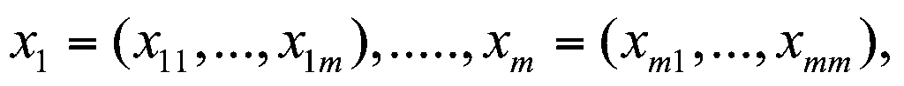
vµ
gi¶ thiÕt biÕt m· t¬ng øng cña chóng lµ:
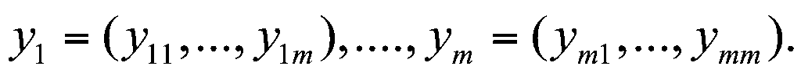
Ta ký hiÖu X vµ Y lµ hai ma trËn cÊp m , X=(xi j ), Y= (yi j ). Theo ®Þnh nghÜa m· Hill, ta cã ph¬ng tr×nh Y =X.K. NÕu c¸c xi ®îc chän sao cho ma trËn X cã nghÞch ®¶o X-1 th× ta t×m ®îc K = X-1.Y , tøc lµ t×m ®îc kho¸ cña hÖ m· ®îc sö dông.
ThÝ dô: Gi¶ sö m· Hill ®îc sö dông cã m =2, vµ ta biÕt b¶n râ friday cïng b¶n m· t¬ng øng pqcfku. Nh vËy ta biÕt
eK(5,17) =(15,16), eK(8,3) =(2,5), vµ eK(0,24) =(10,20).
Tõ hai ph¬ng tr×nh ®Çu ta ®îc
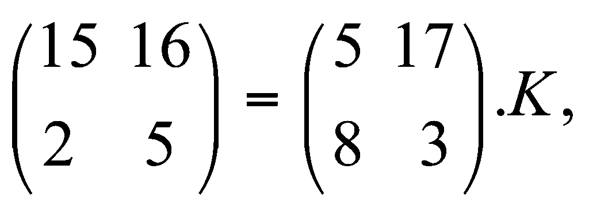
tõ
®ã ®îc K
=
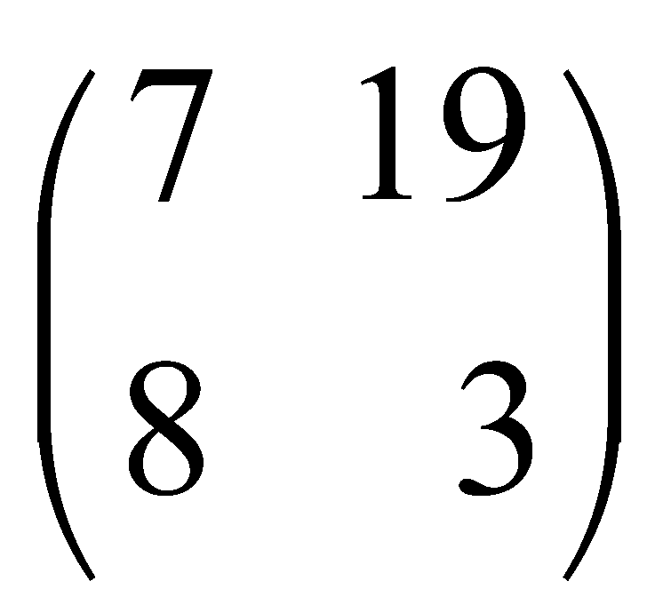
Trë l¹i víi vÊn ®Ò x¸c ®Þnh m. NÕu m kh«ng qua lín, ta cã thÓ thö c¸ch trªn lÇn lît víi m = 2,3,4,... cho ®Õn khi t×m ®îc kho¸, vµ kho¸ K xem lµ t×m ®îc nÕu ngoµi m cÆp bé m (x1,y1),..., (xm , ym) dïng ®Ó t×m kho¸, K vÉn nghiÖm ®óng víi c¸c cÆp bé m kh¸c mµ ta cã thÓ chän ®Ó thö.
3.3. MËt m· theo dßng vµ c¸c d·y sè gi¶ ngÉu nhiªn.
3.3.1. MËt m· theo dßng.
C¸c hÖ mËt m· ®îc xÐt trong c¸c tiÕt trªn ®Òu thuéc lo¹i mËt m· theo khèi, v¨n b¶n râ ®îc chia thµnh tõng khèi vµ viÖc lËp mËt m· cho v¨n b¶n ®ã ®îc thùc hiÖn cho tõng khèi råi sau ®ã nèi ghÐp l¹i, lËp mËt m· cho tÊt c¶ c¸c khèi ®Òu theo cïng mét kho¸ chung K. Víi c¸ch lËp mËt m· theo dßng, theo m« t¶ trong tiÕt 1.2, c¸c khoa dïng cho c¸c khèi v¨n b¶n nãi trªn cã thÓ kh¸c nhau, do ®ã, cïng víi s¬ ®å mËt m· gèc, ta cßn cÇn cã mét bé sinh dßng kho¸ ®Ó víi mçi mÇm kho¸ s cho tríc nã sinh ra mét dßng kho¸ K1K2K3..., mçi Ki dïng ®Ó lËp mËt m· cho khèi xi cña v¨n b¶n. Mçi tõ kho¸ Ki , ngoµi viÖc phô thuéc vµo mÇm kho¸ s cßn cã thÓ phô thuéc vµo ®o¹n tõ kho¸ K1...Ki-1 ®· ®îc sinh ra tríc ®ã vµ c¶ vµo c¸c yÕu tè kh¸c, ch¼ng h¹n nh ®o¹n v¨n b¶n x1...xi-1 ®· ®îc lËp mËt m· tríc ®ã. Nh vËy, ta cã thÓ ®Þnh nghÜa l¹i nh sau: Mét s¬ ®å hÖ mËt m· theo dßng ®îc cho bëi mét bé
S = (P , C , R, K , F, E , D ) (1)
tháa m·n c¸c ®iÒu kiÖn sau ®©y:
P lµ mét tËp h÷u h¹n c¸c ký tù b¶n râ,
C lµ mét tËp h÷u h¹n c¸c ký tù b¶n m·,
R lµ mét tËp h÷u h¹n c¸c mÇm kho¸,
K lµ mét tËp h÷u h¹n c¸c khãa,
F = { f1, f 2,....}lµ bé sinh dßng kho¸, trong ®ã mçi fi lµ mét ¸nh x¹ tõ R K i- 1P i- 1vµo K ,
E lµ mét ¸nh x¹ tõ KP vµo C , , ®îc gäi lµ phÐp lËp mËt m·; vµ D lµ mét ¸nh x¹ tõ K C vµo P , ®îc gäi lµ phÐp gi¶i m·. Víi mçi KK , ta ®Þnh nghÜa eK : P C , dK :C P lµ hai hµm cho bëi :
x P : eK(x) = E (K,x) ; y C : dK(y) = D (K,y).
eK vµ dK ®îc gäi lÇn lît lµ hµm lËp m· vµ hµm gi¶i m· øng víi khãa mËt m· K. C¸c hµm ®ã ph¶i tháa m·n hÖ thøc:
x P : dK(eK(x)) = x.
Khi cho tríc mÇm kho¸ r R , víi mçi b¶n râ x = x1x2....xm P *, ta cã b¶n mËt m· t¬ng øng lµ y = y1 y2.... ym , víi
yi = E (Ki ,xi ) , trong ®ã Ki = fi (r, K1,...,Ki- 1, x1x2....xi- 1), (i =1,2,...,m).
§iÒu ®ã cã nghÜa lµ tõ mÇm kho¸ r vµ b¶n râ x sinh ra ®îc dßng kho¸ K1K2...Km , vµ víi dßng kho¸ ®ã lËp ®îc b¶n mËt m· y theo tõng ký tù mét.
NÕu bé sinh dßng kho¸ kh«ng phô thuéc vµo v¨n b¶n râ, tøc lµ nÕu mçi fi lµ mét ¸nh x¹ tõ R K i- 1 vµo K , th× ta gäi bé sinh dßng kho¸ ®ã lµ ®ång bé ; dßng kho¸ chØ phô thuéc vµo mÇm kho¸ vµ lµ nh nhau ®èi víi mäi v¨n b¶n râ. Mét dßng khãa K =K1K2K3.. ®îc gäi lµ tuÇn hoµn víi chu kú d nÕu cã sè nguyªn N sao cho Ki+d = Ki víi mäi i N . Chó ý r»ng m· VigenÌre víi ®é dµi khãa m cã thÓ ®îc coi lµ m· dßng víi dßng kho¸ cã chu kú m, vµ cã c¸c phÐp lËp m· vµ gi¶i m· theo m· chuyÓn dÞch.
§èi víi c¸c hÖ m· theo dßng, ®é b¶o mËt thêng ®îc quyÕt ®Þnh bëi ®é ngÉu nhiªn cña dßng kho¸, tøc lµ tÝnh ngÉu nhiªn cña viÖc xuÊt hiÖn c¸c ký tù trong dßng kho¸, mµ Ýt phô thuéc vµo b¶n th©n phÐp lËp mËt m·, do ®ã c¸c phÐp lËp mËt m· eK (vµ c¶ phÐp gi¶i m· dK ) ®Òu cã thÓ ®îc chän lµ c¸c phÐp ®¬n gi¶n; trong c¸c øng dông thùc tÕ, ngêi ta thêng dïng hÖ m· víi P = C = K = Z2 , vµ víi c¸c phÐp lËp m· vµ gi¶i m· ®îc cho bëi
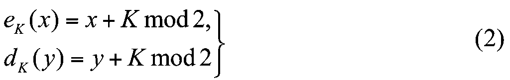
3.3.2. M· dßng víi dßng kho¸ sinh bëi hÖ thøc truy to¸n.
C¸c
hÖ mËt m· dßng víi dßng kho¸ sinh bëi hÖ thøc truy to¸n lµ
c¸c hÖ m· theo s¬ ®å (1) víi P
= C
=
K
= Z2
, R
=
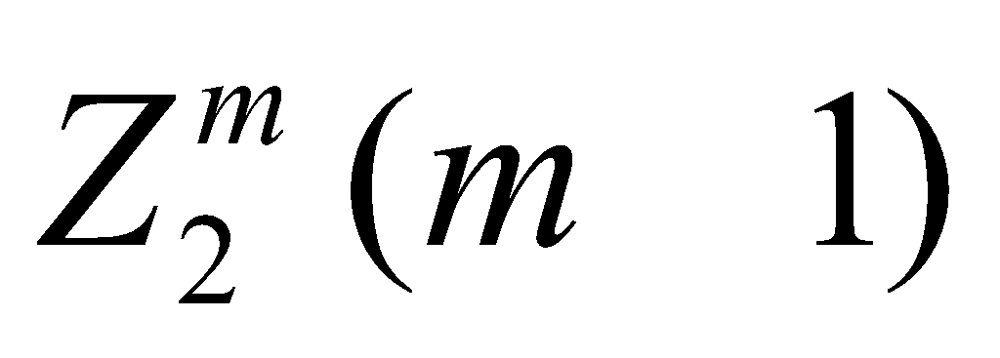
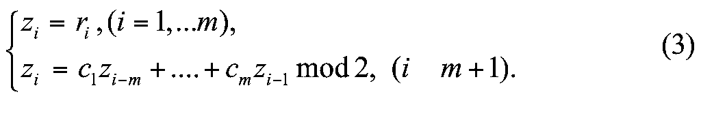
trong ®ã c1 ,..., cm lµ c¸c h»ng sè thuéc Z2 ; c¸c phÐp lËp mËt m· vµ gi¶i m· cho tõng ký tù ®îc cho bëi c¸c c«ng thøc (2).
C¸c dßng kho¸ sinh bëi hÖ thøc truy to¸n nh trªn lµ c¸c dßng kho¸ tuÇn hoµn, ta cã thÓ chän mÇm sao cho ®¹t ®îc dßng kho¸ cã chu kú lín nhÊt lµ 2m-1.
HÖ t¹o sinh c¸c dßng kho¸ bëi hÖ thøc truy to¸n cã thÓ ®îc thùc hiÖn bëi mét thiÕt bÞ kü thuËt ®¬n gi¶n b»ng c¸ch dïng mét thanh ghi chuyÓn dÞch ph¶n håi tuyÕn tÝnh (linear feedback shift register); vµ nh vËy chØ cÇn thªm mét bé céng mod2 n÷a lµ ta cã ®îc mét m¸y lËp mËt m· vµ gi¶i m· tù ®éng; do ®ã c¸c m¸y mËt m· kiÓu nµy ®· ®îc sö dông kh¸ phæ biÕn trong mét giai ®o¹n tríc ®©y.
ThÝ dô: chän m = 4 vµ hÖ thøc truy to¸n
zi = zi - 4 + zi - 3 mod2 (i >4)
ta sÏ ®îc víi mäi mÇm K = z1z2z3z4 0000 mét dßng kho¸ tuÇn hoµn cã chu kú 15. Ch¼ng h¹n, víi r = 1000 ta sÏ ®îc dßng kho¸:
10001001101011110001001........
Dßng kho¸ ®ã ®îc sinh bëi thanh ghi chuyÓn dÞch ph¶n håi tuyÕn tÝnh sau ®©y:
+
zz
z1 z2 z3 z4
3.3.3. M· dßng víi dßng kho¸ lµ d·y sè gi¶ ngÉu nhiªn.
Nh ®· xÐt trong c¸c môc trªn, s¬ ®å m· theo dßng cã thÓ ®îc xem lµ bao gåm hai bé phËn: mét s¬ ®å mËt m· nÒn (cho viÖc lËp mËt m· vµ gi¶i m· trªn tõng ký tù),vµ mét c¬ chÕ t¹o dßng khãa. T¬ng tù nh víi hÖ m· dßng cã dßng kho¸ sinh bëi thanh ghi chuyÓn dÞch trong môc trªn, ta sÏ xÐt s¬ ®å mËt m· nÒn lµ s¬ ®å
S = (P , C , K , E , D ) ,
trong ®ã P = C = K = Z2 , E vµ D ®îc cho bëi: E (K, x ) = x + K mod2 , D (K, y ) = y + K mod2 .
C¬ chÕ t¹o dßng kho¸ cã thÓ xem lµ mét ¸nh x¹ : R XZ K , x¸c ®Þnh víi mçi mÇm kho¸ r R = vµ mçi sè nguyªn i 0, mét sè h¹ng zi = (r ,i ) K cña dßng kho¸ ®ång bé K = z1z2....zi.....
Mét hÖ mËt m· dßng lµ cã ®é b¶o mËt cao, nÕu b¶n th©n s¬ ®å mËt m· nÒn cã ®é b¶o mËt cao (ch¼ng h¹n, lµ bÝ mËt hoµn toµn theo ®Þnh nghÜa Shannon), vµ c¬ chÕ t¹o dßng kho¸ t¹o ra ®îc c¸c dßng kho¸ lµ c¸c d·y bit ngÉu nhiªn. DÔ thÊy r»ng, s¬ ®å mËt m· nÒn m« t¶ ë trªn tho¶ m·n c¸c ®iÒu kiÖn cña ®Þnh lý 2.2.1 , do ®ã nã lµ bÝ mËt hoµn toµn; v× vËy ®Ó cã ®îc c¸c hÖ m· dßng víi ®é b¶o mËt cao ta chØ cÇn chän ®îc c¸c c¬ chÕ t¹o dßng kho¸ b¶o ®¶m sinh ra c¸c d·y bit ngÉu nhiªn. Mét d·y bit z1z2....zi..... ®îc xem lµ ngÉu nhiªn, nÕu mçi zi lµ mét biÕn ngÉu nhiªn víi p(zi = 0) = p(zi = 1) = 0.5, vµ c¸c biÕn ngÉu nhiªn zi vµ zj (i j ) lµ ®éc lËp víi nhau. Víi nghÜa ®ã, ta kh«ng cã c¸ch nµo ®Ó ®o¸n nhËn mét d·y bit cho tríc cã lµ ngÉu nhiªn hay kh«ng, v¶ ch¨ng mét d·y bit, nÕu ®· ®îc sinh ra bëi mét sè h÷u h¹n qui t¾c nµo ®ã, th× kh«ng cßn cã thÓ xem lµ ngÉu nhiªn ®îc n÷a. V× vËy, thay cho ®ßi hái ph¶i t¹o ra c¸c d·y bit ngÉu nhiªn, thêng ta chØ yªu cÇu t¹o ra ®îc c¸c d·y bit gi¶ ngÉu nhiªn, tøc lµ cã mét tÝnh chÊt nµo ®ã gÇn víi ngÉu nhiªn, mµ th«i. Yªu cÇu th«ng dông nhÊt ®èi víi tÝnh gi¶ ngÉu nhiªn cña mét d·y bit z1z2....zi..... lµ “biÕt tríc mét ®o¹n ®Çu z1z2....zi- 1 khã mµ ®o¸n ®îc bit tiÕp theo zi ”. Ta thö chÝnh x¸c ho¸ ý tëng nµy nh sau:
Kh«ng gian c¸c mÇm kho¸ R = cã tÊt c¶ lµ 2m mÇm kho¸ kh¸c nhau, gi¶ sö tÊt c¶ chóng ®Òu cã x¸c suÊt xuÊt hiÖn nh nhau, tøc lµ b»ng 1/2m. Ta xÐt tËp hîp tÊt c¶ c¸c dßng kho¸ cã thÓ cã víi ®é dµi l (l m), tøc lµ tËp Z l, vµ trªn tËp ®ã ta x¸c ®Þnh mét ph©n bè x¸c suÊt p1 sao cho p1(z1....zl) =1/2m nÕu z1....zl lµ mét dßng kho¸ sinh ra ®îc tõ mét mÇm kho¸ r R nµo ®ã, vµ p1(z1....zl) = 0 nÕu ngîc l¹i. Ta nãi ph©n bè x¸c suÊt p1 ®ã trªn Z l lµ ®îc c¶m sinh tõ ph©n bè x¸c suÊt ®Òu trªn kh«ng gian c¸c mÇm kho¸ R . Cßn chÝnh ph©n bè x¸c suÊt ®Òu trªn Z l sÏ ®îc ký hiÖu lµ p0.
Gi¶ sö : R XZ K lµ c¬ chÕ t¹o dßng kho¸ cña mét hÖ mËt m· dßng, vµ r R . Ta nãi B lµ mét thuËt to¸n ®o¸n bit tiÕp theo (®èi víi vµ r ) nÕu víi mäi sè nguyªn i (0 i l )vµ mäi tõ z1...zi-1Z i -1, ta cã : B (i, z1...zi- 1) = (r ,i ). Râ rµng nÕu ta muèn c¬ chÕ t¹o ra c¸c dßng kho¸ gi¶ ngÉu nhiªn tèt th× ta kh«ng mong cã thuËt to¸n ®o¸n bit tiÕp theo lµm viÖc cã hiÖu qu¶ (ch¼ng h¹n tÝnh to¸n ®îc trong thêi gian ®a thøc). Gi¶m nhÑ yªu cÇu “®o¸n ®óng bit tiÕp theo”, ta sÏ nãi thuËt to¸n B lµ -®o¸n bit tiÕp theo (®èi víi vµ r ) nÕu cã
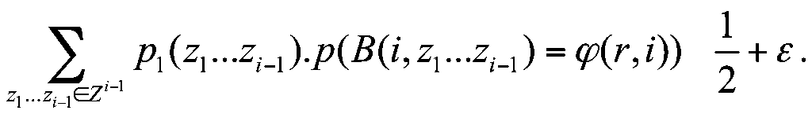
(4) (chó ý r»ng biÓu thøc ë vÕ tr¸i lµ kú väng to¸n häc cña viÖc ®o¸n ®óng bit thø i tiÕp theo cña c¸c dßng kho¸ gåm i -1 bit).Nh vËy, ta cã thÓ xem mét c¬ chÕ t¹o dßng kho¸ lµ an toµn ®Ó sö dông cho c¸c hÖ mËt m· theo dßng, nÕu víi mäi mÇm kho¸ r vµ mäi 0 bÊt kú, kh«ng thÓ cã thuËt to¸n -®o¸n bit tiÕp theo lµm viÖc trong thêi gian ®a thøc.
Díi ®©y, ta sÏ dùa vµo c¸c hµm sè häc mét phÝa ®Ó x©y dùng mét sè c¬ chÕ t¹o c¸c d·y sè gi¶ ngÉu nhiªn c¬ hå cã thÓ dïng lµm c¬ chÕ ®Ó t¹o dßng kho¸ cho c¸c hÖ mËt m· theo dßng mµ ta ®ang xÐt.
T¹o bit gi¶ ngÉu nhiªn RSA.
C¬
chÕ t¹o d·y bit gi¶ ngÉu nhiªn RSA ®îc m« t¶ nh
sau : Chän sè nguyªn n
=p.q
lµ tÝch cña hai sè nguyªn tè p
vµ q
cã biÓu diÔn nhÞ ph©n víi ®é dµi cì m/2
bit (nh vËy n
cã
biÓu diÔn nhÞ ph©n cì m
bit), vµ mét sè b
sao cho gcd(b,
(n))
= 1. LÊy
R
= ,
vµ víi mçi r
R
x¸c
®Þnh d·y sè
s
0,
s1,
s2,....
nh sau:
,
vµ víi mçi r
R
x¸c
®Þnh d·y sè
s
0,
s1,
s2,....
nh sau:
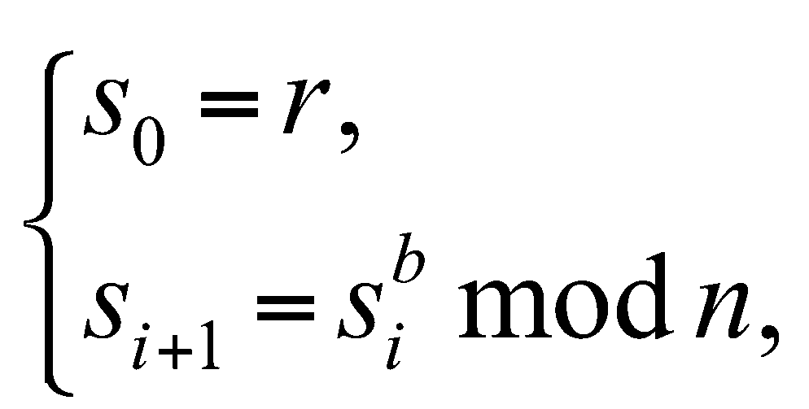
vµ sau ®ã ®Þnh nghÜa zi = (r ,i ) = si mod2, tøc zi lµ bit thÊp nhÊt trong biÓu diÔn nhÞ ph©n cña sè si. D·y K = z1z2....zi.... lµ dßng bit ®ång bé ®îc t¹o ra bëi mÇm r.
ThÝ dô : LÊy n = 91261 = 263.347, b =1547, r =75634. Cã thÓ tÝnh c¸c sè s1,...,s20 lÇn lît lµ:
31483, 31238, 51968, 39796, 28716, 14089, 5923, 44891,
62284, 11889, 43467, 71215, 10401, 77444, 56794, 78147,
72137, 89592, 29022, 13356.
Vµ 20 bit ®Çu tiªn cña dßng bit gi¶ ngÉu nhiªn ®îc sinh ra lµ:
z1...z20 = 10000111011110011000.
T¹o bit gi¶ ngÉu nhiªn BBS (Blum-Blum-Shub) :
C¬ chÕ t¹o bit gi¶ ngÉu nhiªn BBS ®îc m« t¶ nh sau : Chän n =p.q lµ tÝch cña hai sè nguyªn tè d¹ng 4m +3, tøc p 3(mod4) vµ
q 3 (mod4). Gäi QR(n ) lµ tËp c¸c thÆng d bËc hai theo modn. LÊy R =QR(n ) , vµ víi mçi r R x¸c ®Þnh d·y sè s 0, s1, s2,.... nh sau:
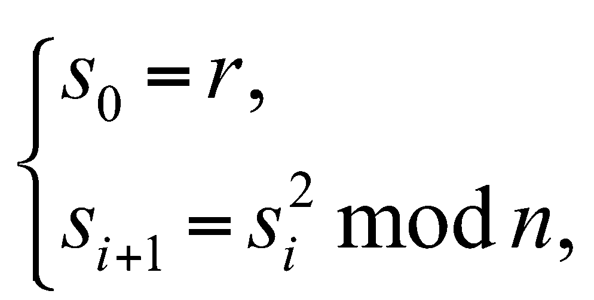
vµ sau ®ã ®Þnh nghÜa zi = (r ,i ) = si mod2, tøc zi lµ bit thÊp nhÊt trong biÓu diÔn nhÞ ph©n cña sè si. D·y K = z1z2....zi.... lµ dßng bit ®ång bé ®îc t¹o ra bëi mÇm r.
ThÝ dô : LÊy n = 192649 = 383.503, r = 20749 (= 1013552 modn). Cã thÓ tÝnh 20 sè ®Çu cña d·y s1,...,s20,... lÇn lît lµ:
143135, 177671, 97048, 89992, 174051, 80649, 45663,
69442, 186894, 177046, 137922, 123175, 8630, 114386,
14863, 133015, 106065, 45870, 137171, 18460.
Vµ 20 bit ®Çu cña dßng bit gi¶ ngÉu nhiªn ®îc sinh ra lµ:
z1...z20 = 11001110000100111010.
T¹o bit gi¶ ngÉu nhiªn dùa vµo bµi to¸n logarit rêi r¹c :
Chän
p
lµ mét sè nguyªn tè lín, vµ
lµ mét phÇn tö nguyªn thuû theo modp.
TËp c¸c mÇm kho¸ lµ R
=
 .
Víi
mçi mÇm kho¸ r
R
ta
x¸c ®Þnh d·y sè s0,...,si
.... bëi :
.
Víi
mçi mÇm kho¸ r
R
ta
x¸c ®Þnh d·y sè s0,...,si
.... bëi :
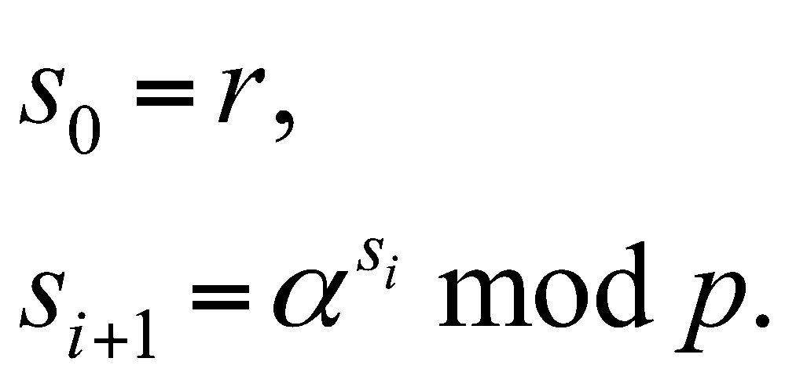
Sau ®ã ®Þnh nghÜa zi = (r ,i )(i =1,2,....) nh sau: zi = 1 nÕu si p/2, vµ zi = 0 nÕu si p/2. Vµ K =z1....zi...... lµ dßng kho¸, tøc dßng bit gi¶ ngÉu nhiªn, ®îc t¹o ra.
Trªn ®©y lµ mét vµi c¬ chÕ t¹o dßng kho¸, vµ ®Ó c¸c dßng kho¸ ®îc t¹o ra ®ã lµ nh÷ng dßng bit gi¶ ngÉu nhiªn tèt , ta ®· cè ý dùa vµo mét sè bµi to¸n sè häc khã theo nghÜa lµ cha t×m ®îc nh÷ng thuËt to¸n lµm viÖc trong thêi gian ®a thøc ®Ó gi¶i chóng, nh c¸c bµi to¸n RSA, bµi to¸n thÆng d bËc hai vµ bµi to¸n l«garit rêi r¹c. C¸c c¬ chÕ t¹o dßng kho¸ ®ã ®îc xem lµ an toµn nÕu ta chøng minh ®îc r»ng kh«ng thÓ cã c¸c thuËt to¸n -®o¸n bit tiÕp theo ®èi víi chóng; hay mét c¸ch kh¸c, nÕu cã thuËt to¸n -®o¸n bit tiÕp theo ®èi víi chóng th× còng sÏ cã thuËt to¸n (tÊt ®Þnh hoÆc x¸c suÊt) gi¶i c¸c bµi to¸n sè häc t¬ng øng. TiÕc thay, ®Õn nay ta cha chøng minh ®îc mét kÕt qu¶ nµo theo híng mong muèn ®ã; tuy nhiªn còng ®· cã mét vµi kÕt qu¶ yÕu h¬n, thÝ dô, ®èi víi bé t¹o bit gi¶ ngÉu nhiªn BBS ngêi ta ®· chøng minh ®îc r»ng : nÕu víi mäi 0 cã thuËt to¸n - ®o¸n bit cã tríc (®èi víi vµ r ) th× víi mäi 0 còng cã thÓ x©y dùng mét thuËt to¸n x¸c suÊt gi¶i bµi to¸n thÆng d bËc hai víi x¸c suÊt tr¶ lêi sai lµ (§Þnh nghÜa cña thuËt to¸n - ®o¸n bit cã tríc t¬ng tù nh víi thuËt to¸n - ®o¸n bit tiÕp theo, chØ kh¸c lµ thay c«ng thøc (4) bëi c«ng thøc sau ®©y
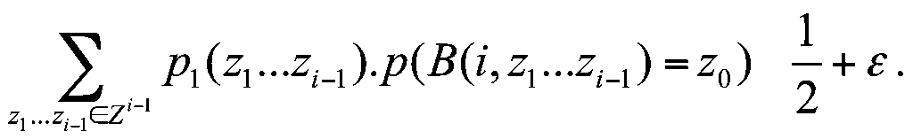
trong ®ã z0 = s0 mod2 lµ bit cã tríc d·y z1...zi-1).
Trong thùc tiÔn, c¸c hÖ m· dßng víi dßng kho¸ lµ d·y bit ngÉu nhiªn ®· ®îc sö dông tõ l©u vµ cßn ®îc sö dông cho ®Õn ngµy nay, víi dßng bit ngÉu nhiªn ®îc t¹o ra mét c¸ch c¬ häc nh viÖc tung ®ång xu liªn tiÕp vµ ghi liªn tiÕp c¸c kÕt qu¶ “sÊp, ngöa” cña c¸c lÇn tung. C¸c hÖ m· dßng víi dßng kho¸ ngÉu nhiªn vµ víi s¬ ®å mËt m· nÒn cho bëi c¸c hÖ thøc (2) cã thÓ ®îc xem lµ “bÝ mËt hoµn toµn” theo nghÜa Shannon, do ®ã rÊt ®îc a chuéng trong øng dông thùc tÕ, chóng thêng ®îc gäi lµ c¸c hÖ ®Öm mét lÇn (one-time pad), ®îc m« t¶ vµ sö dông ®Çu tiªn bëi Gilbert Vernam n¨m 1917. Tuy nhiªn, viÖc t¹o c¸c dßng bit ngÉu nhiªn mét c¸ch thñ c«ng lµ kh«ng hiÖu qu¶, viÖc gi÷ bÝ mËt c¸c dßng kho¸ nh vËy l¹i cµng khã h¬n, nªn kh«ng thÓ sö dông mét c¸ch phæ biÕn ®îc, do ®ã ngµy nay c¸c hÖ m· nh vËy chØ cßn ®îc sö dông trong nh÷ng trêng hîp thËt ®Æc biÖt.
3.4. HÖ mËt m· chuÈn DES.
3.4.1. Giíi thiÖu hÖ m· chuÈn.
Bíc sang kû nguyªn m¸y tÝnh, viÖc sö dông m¸y tÝnh nhanh chãng ®îc phæ cËp trong mäi ho¹t ®éng cña con ngêi, vµ tÊt nhiªn viÖc dïng m¸y tÝnh trong truyÒn tin b¶o mËt ®· ®îc hÕt søc chó ý. C¸c hÖ mËt m· víi c¸c thuËt to¸n lËp mËt m· vµ gi¶i m· thùc hiÖn b»ng m¸y tÝnh ®îc ph¸t triÓn nhanh chãng, ®ång thêi c¸c lÜnh vùc truyÒn tin cÇn sö dông mËt m· còng ®îc më réng sang nhiÒu ®Þa h¹t kinh tÕ x· héi ngoµi c¸c ®Þa h¹t truyÒn thèng. Vµo ®Çu thËp niªn 1970, tríc t×nh h×nh ph¸t triÓn ®ã ®· nÈy sinh nhu cÇu ph¶i chuÈn ho¸ c¸c gi¶i ph¸p mËt m· ®îc sö dông trong x· héi, ®Ó mét mÆt, híng dÉn c¸c thµnh viªn trong x· héi thùc hiÖn quyÒn truyÒn tin b¶o mËt hîp ph¸p cña m×nh, mÆt kh¸c, b¶o ®¶m sù qu¶n lý vµ gi¸m s¸t cña nhµ n¬c ®èi víi c¸c ho¹t ®éng b¶o mËt ®ã. Do ®ã, t¹i Hoa kú, ngµy 15/5/1973, Côc An ninh quèc gia (NBS - National Bureau of Security) c«ng bè mét yªu cÇu c«ng khai x©y dùng vµ ®Ò xuÊt mét thuËt to¸n mËt m· chuÈn, ®¸p øng c¸c ®ßi hái chñ yÕu lµ:
- ThuËt to¸n ph¶i ®îc ®Þnh nghÜa ®Çy ®ñ vµ dÔ hiÓu;
- ThuËt to¸n ph¶i cã ®é an toµn cao, ®é an toµn ®ã ph¶i kh«ng phu thuéc vµo sù gi÷ bÝ mËt cña b¶n th©n thuËt to¸n, mµ chØ n»m ë sù gi÷ bÝ mËt cña kho¸;
- ThuËt to¸n ph¶i ®îc s½n sµng cung cÊp cho mäi ngêi dïng;
ThuËt to¸n ph¶i thÝch nghi ®îc víi viÖc dïng cho c¸c øng dông kh¸c nhau;
ThuËt to¸n ph¶i cµi ®Æt ®îc mét c¸ch tiÕt kiÖm trong c¸c thiÕt bÞ ®iÖn tö;
- ThuËt to¸n ph¶i sö dông ®îc cã hiÖu qu¶;
- ThuËt to¸n ph¶i cã kh¶ n¨ng ®îc hîp thøc ho¸;
- ThuËt to¸n ph¶i xuÊt khÈu ®îc.
Vµo thêi ®iÓm NBS ®a ra yªu cÇu nãi trªn, cha cã mét c¬ quan nµo ®Ò xuÊt ®îc mét gi¶i ph¸p ®¸p øng tÊt c¶ c¸c ®ßi hái ®ã. Mét n¨m sau, ngµy 27/4/1974, yªu cÇu ®ã l¹i ®îc nh¾c l¹i; vµ lÇn nµy h·ng IBM chÊp nhËn dù tuyÓn víi s¶n phÈm sÏ ®îc ®Ö tr×nh lµ mét thuËt to¸n c¶i tiÕn tõ mét thuËt to¸n ®· ®îc ph¸t triÓn tríc ®ã lµ LUCIFER. KÕt qu¶ lµ, s¶n phÈm DES (Data Encryption Standard) ®îc c«ng bè, lÇn ®Çu tiªn vµo ngµy 17/3/1975. Sau nhiÒu tranh luËn, cuèi cïng DES ®îc chÊp nhËn nh mét chuÈn liªn bang vµo ngµy 23/11/1976, vµ ®îc c«ng bè ngµy 15/1/1977; ®Õn n¨m 1980 l¹i c«ng bè thªm «c¸c c¸ch dïng DES», cho phÐp ngêi dïng cã thÓ sö dông DES theo nhiÒu c¸ch kh¸c nhau. Tõ ®ã, DES ®îc cµi ®Æt s½n vµo c¸c thiÕt bÞ cøng thµnh c¸c m¸y m·, hoÆc ®îc cµi ®Æt nh mét phÇn mÒm trong c¸c thiÕt bÞ tÝnh to¸n ®a dông, vµ ®· ®îc sö dông réng r·i trong c¸c lÜnh vùc qu¶n lý hµnh chÝnh, kinh tÕ, th¬ng m¹i, ng©n hµng, v.v... kh«ng nh÷ng ë Hoa kú mµ cßn ë nhiÒu quèc gia kh¸c. Theo qui ®Þnh cña NBS, v¨n phßng quèc gia vÒ chuÈn cña Hoa kú, cø kho¶ng 5 n¨m DES l¹i ph¶i ®îc xem xÐt l¹i mét lÇn ®Ó ®îc c¶i tiÕn vµ bæ sung. Sau khi c¸c hÖ mËt m· cã kho¸ c«ng khai ®îc ph¸t triÓn vµ sö dông réng r·i, còng ®· cã nhiÒu ý kiÕn ®Ò nghÞ thay ®æi chuÈn míi cho c¸c hÖ mËt m·, nhng trªn thùc tÕ, DES vÉn cßn ®îc sö dông nh mét chuÈn cho ®Õn ngµy nay trong nhiÒu lÜnh vùc ho¹t ®éng.
3.4.2. M« t¶ hÖ mËt m· chuÈn DES.
S¬
®å kh¸i qu¸t.
Díi ®©y ta sÏ tr×nh bµy s¬ ®å cña thuËt to¸n lËp
mËt m· DES. HÖ mËt m· DES lµ mét hÖ mËt m· theo khèi, mçi
khèi b¶n râ lµ mét tõ 64 bit, tøc lµ mét phÇn tö thuéc
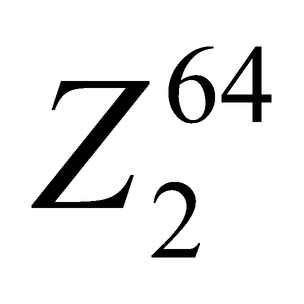 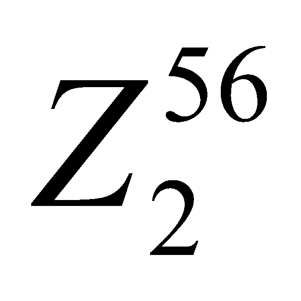
4
1.3. C¸c hÖ thèng mËt m· cæ ®iÓn cã kho¸ ®èi xøng 6
1.4. §é phøc t¹p tÝnh to¸n. Khoa häc mËt m· hiÖn ®¹i. 7
1.5.C¸chÖmËtm·cãkho¸c«ngkhai................................ 8
1.6.MËtm·vµc¸cbµito¸nvÒantoµnth«ngtin...................10
1.7. Th¸m m· vµ ®é an toµn cña c¸c gi¶i ph¸p mËt m·............